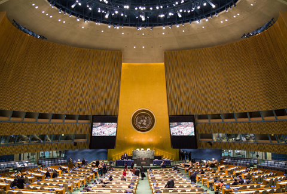

The official side event calendar for the General Assembly High-level Meeting on the overall review of the implementation of the outcomes of the World Summit on the Information Society is now available.
Click to view calendar

Pursuant to resolution 68/302 of 31 August 2014, a high-level meeting of the General Assembly on the overall review of the implementation of the outcomes of the World Summit on the Information Society (WSIS), will be held on Tuesday, 15, and Wednesday, 16 December 2015, at 10:00 and 15:00, in the General Assembly Hall. A letter from the President of the General Assembly, dated 21 September 2015, was sent to all permanent representatives and permanent observers. Delegations wishing to speak are kindly requested to inscribe with the list of speakers, to the General Assembly Affairs Branch (Ms. Antonina Poliakova, e-mail poliakova at un.org, tel. 1 (212) 963-5063). Delegations are reminded that interventions should be limited to five minutes when speaking in national capacity and to seven minutes when speaking on behalf of a group.
Kindly note that this announcement is only for member states and observers.
Stakeholders who would like to organize a side event during the High-level meeting of the General Assembly on WSIS + 10 review on 15- 16 December 2015 can now make their requests. Please click here to download the side event request form. Stakeholders are strongly encouraged to co-organize side events with UN Member States and UN Agencies.
All request for side events should be submitted by 17 November 2015 to maaloufs@un.org.
Download side event request form